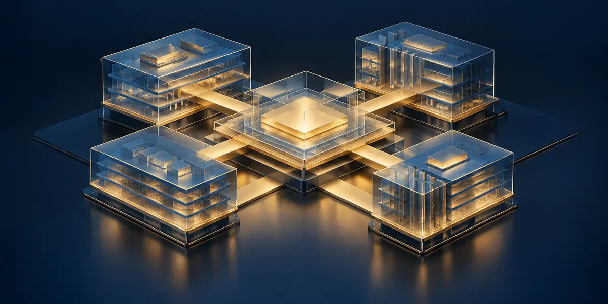
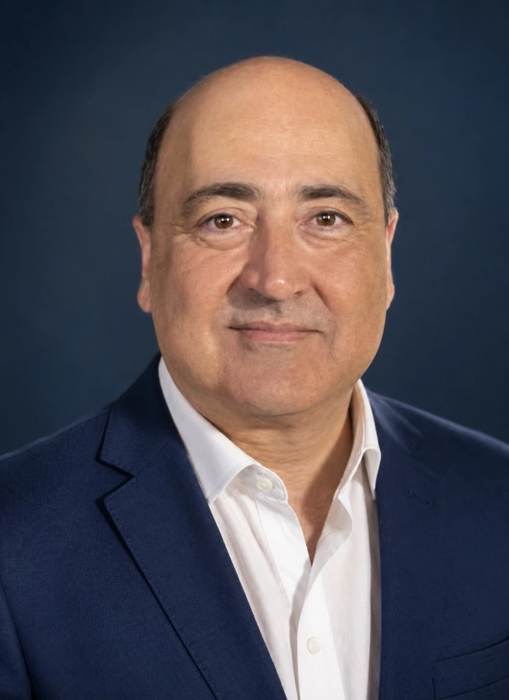
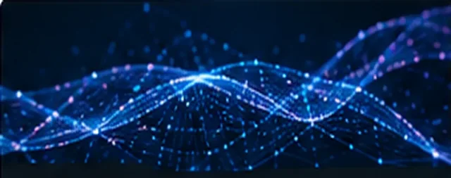
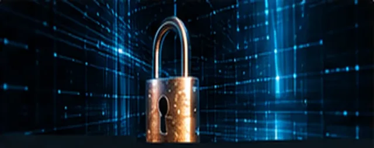

Enterprise Transformation · A story from my work
Business 2.0
Leading change across the enterprise.
Connecting business priorities, processes, and enterprise systems in a complex global business.
Read the story ↗I help organizations harness technology, AI, and operational excellence to drive growth, strengthen security, accelerate transformation, and create lasting enterprise value.

Behshad BeheshtiWhere I focus my work
Turn technology and operational capabilities into measurable business outcomes.

Adopt and scale AI responsibly to drive real business value.
Unify people, technology, and processes to accelerate value creation.

Build resilient, secure, and trusted organizations in a changing threat landscape.
Stories, lessons, and ideas from my work

Leading change across the enterprise.
Connecting business priorities, processes, and enterprise systems in a complex global business.
Read the story ↗Leading through a multibillion-dollar global acquisition.
Integration choices, Day 1 readiness, cross-functional execution and the challenge of building a global technology organization while preserving the business.
Read the story →